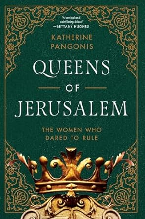
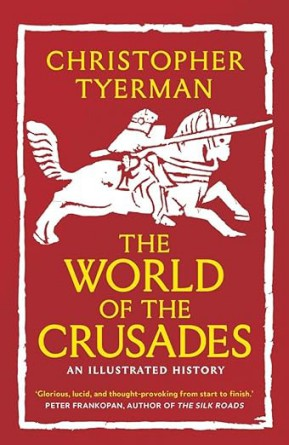

Queens of Jerusalem:
Women Who Dared to Rule
Author: Katherine Pagonix
Published: 2022
Publisher: Pegasus Books
Audience: Gen-Pop
Book that serves as basic biography of the queens of jerusalem, does not contain footnotes but does have a serious biliography. Serves as a good jumping off point and draws interesting parallels between women even if it doesnt fully source or explore them.
amazon
Women Who Dared to Rule
Published: 2022
Publisher: Pegasus Books
Audience: Gen-Pop
Book that serves as basic biography of the queens of jerusalem, does not contain footnotes but does have a serious biliography. Serves as a good jumping off point and draws interesting parallels between women even if it doesnt fully source or explore them.
amazon

The World of the Crusades:
Author: Christopher Tyerman
Published: 2023
Publisher: Yale University Press
Audience: Semi-Scholarly
Overview of the crusades as a whole, used primarily as a collection of well organized sources based on topic. The book focuses on themes throughout the crusades, including internal strife and the military escapades of the crusades, both inteligent and idiotic.
amazon
Published: 2023
Publisher: Yale University Press
Audience: Semi-Scholarly
Overview of the crusades as a whole, used primarily as a collection of well organized sources based on topic. The book focuses on themes throughout the crusades, including internal strife and the military escapades of the crusades, both inteligent and idiotic.
amazon

Islam and the Making of Europe 570-1215
Published: 2018
Publisher: Liveright
Audience: Peer Reviewed
to-read, more theoretical than direct applicable.
amazon